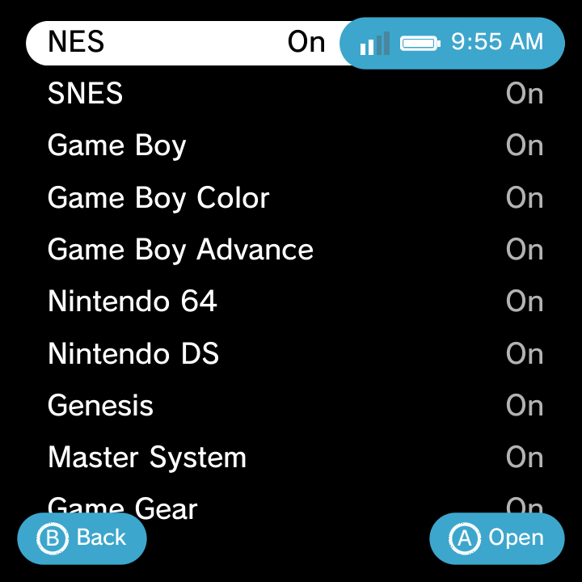

The Game Systems editor is where you control every console in your library. You can turn systems on or off, change the order they appear in, and edit every detail of how a system finds and launches its games.
Opening the editor
- Open the Settings category.
- Go to Game Settings.
- Choose Game Systems.
You get a list of every system Nano knows, each with an On/Off toggle. The editor uses your home theme's own look, so it feels native whether you are on XMB or Minima.


Turning systems on and off
Each system has an On/Off toggle. Turn a system Off to hide it from the Game category (handy if you do not own any games for it). Turn it back On whenever you like. Turning a system off does not delete any files.
Reordering systems
To change the order systems appear in on the home screen, highlight a system and press L1 or R1 to move it up or down the list. Put your favourites at the top.
Editing a system
Select any system to open its editor. Every field below can be changed, so you can point a system at a different emulator, add file types, or give it a new icon.
| Field | What it does |
|---|---|
| Display Name | The name shown in your library (for example "PlayStation 2"). |
| Short Name | A brief label (for example "PS2"). |
| Launch Type | Choose Libretro Core (runs inside RetroArch) or Custom Package (runs a standalone emulator app). |
| Emulator | A searchable picker of RetroArch cores or installed apps. Picking one fills in the launch details for you. |
| Core .so | The libretro core file used, when Launch Type is a Libretro Core. |
| Package | The app the game hands off to, when Launch Type is a Custom Package. |
| Intent Template | The launch command Nano sends to a standalone app. Usually filled in for you when you pick the emulator. |
| Launch Args | Extra arguments passed at launch. |
| Extensions | The file types this system scans for, comma-separated (for example iso, chd, gz). |
| Scan Folders | Which folders to search for games. Use the folder picker, or leave the default ROMs/<id>/. |
| Icon | The system's icon. Choose from a grid of built-in icons, or use your own PNG. |
| Icon Tint | Recolour the icon from 21 swatches, or set a custom RGB colour. |
| Scraper / Username / Password | An optional per-system override for the cover-art scraper. See Boxart & Metadata. |
| Scrape This System | Fetch boxart and metadata for every game in this system now. |
| Reset-to-Default | On built-in systems, restore the original settings. |
| Delete | On custom systems, remove the system. |
Built-in systems show Reset-to-Default, and custom systems you created show Delete instead. That way you can always undo your changes to a built-in system, and cleanly remove ones you made yourself.
A quicker way in
From the Game category, highlight a system row and press the Options button, then choose Manage Game System. That jumps you straight into this editor for that system, without going through Settings. See Context Menus for more shortcuts.
Adding a whole new system
The editor is also how you add a console Nano does not list yet. Scroll to the top of the Game Systems list, choose Add New System..., and pick your emulator. For a full worked example (adding AetherSX2 for PlayStation 2, step by step), see Add a Custom System.
Related pages
- Adding Games for where to put your ROM files.
- Add a Custom System for a complete walkthrough.
- Boxart & Metadata for cover art and game info.